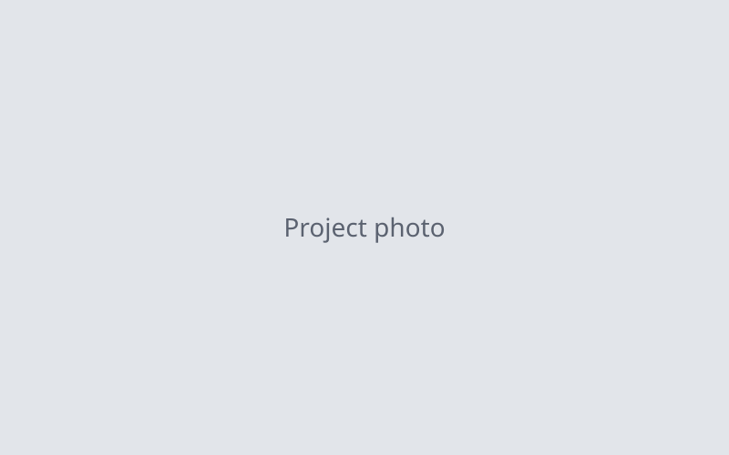

LLM-Generated Programming Questions

Overview
Co-authored "Language Models for Generating Programming Questions with Varying Difficulty Levels," published in the European Public and Social Innovation Review. The study evaluates an LLM's ability to create Python questions for adaptive educational applications.
My contributions
- Conducted the literature review and selected a state-of-the-art coding model from benchmarks.
- Engineered the system prompt to produce the desired response outcomes.
- Developed a Python pipeline that generated a dataset of 800+ programming questions across difficulty levels.
- Wrote Python scripts to analyze the dataset and contributed to the manuscript.
- Presented the research at the 2025 National Conference on Undergraduate Research in Pittsburgh.